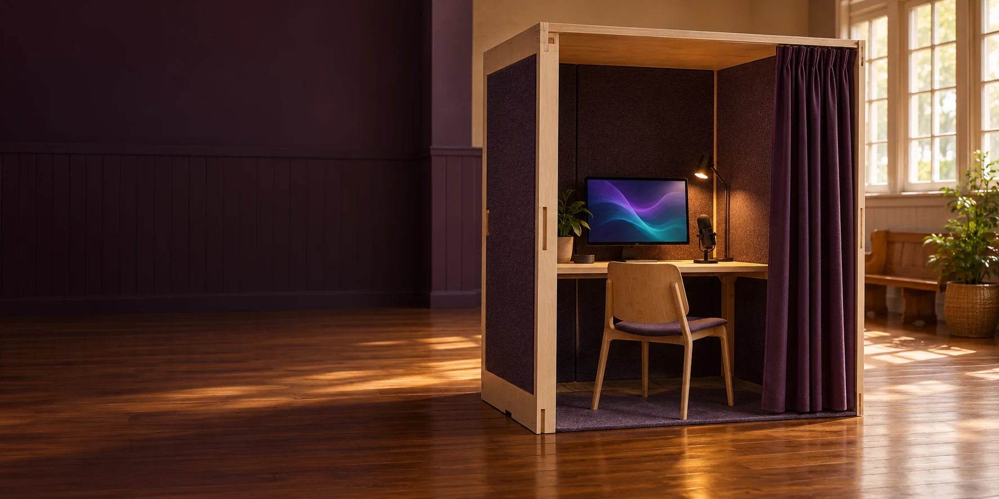

VERSE BOX / A PUBLIC INTRODUCTION TO AURA
A small space.
A world of possibility.
Bring a question, a curiosity or something you want to create. Verse Box opens a practical way into personal AI, learning and community contribution.
Useful intelligence, within reach.
Verse Box is a proposed portable public station for Minjerribah / North Stradbroke Island and the wider Redlands area. It brings equipment, demonstrations and human assistance into a space where residents and visitors could explore their own interests.
This is a fresh look at Luke Nathan Hayes’s original Verse Box idea, recorded in the 11 May 2014 archived iChooseInfinity page ↗. The current proposal connects that idea with personal Aura building, C-Hours and community participation.
The aim is a lower-cost public entry using suitable second-hand computers and a practical portable structure. Hosts, locations, dates, activities and costs would be agreed before a public invitation.
What would you like to explore?
Try something useful.
Learn a skill, make something, investigate an idea or work through a project.
Inside the experience ↗02Begin your own Aura.
Connect your interests, memories and goals with an AI environment you direct.
Personal intelligence ↗03Contribute where you are.
Explore C-Hours, local questions and ways to follow a shared project.
Community and contribution ↗Start here. Grow in your own direction.
An everyday Aura could develop through conversation, learning, creativity and ongoing projects. Verse Box would provide an assisted introduction, with the option to continue on your own device.
A public place to begin.
A portable station, reusable equipment and assisted demonstrations. A lower-cost route into everyday Aura building and C-Hours.
Explore the proposed trial ↗A separate deeper programme.
The proposed intensive path for an ultra-high-definition Aura twin, involving its own HBOT setting, equipment and participation agreements. Genesis is optional.
Visit the partner site ↗No comparative prices or savings have been established in the supplied trial proposal.